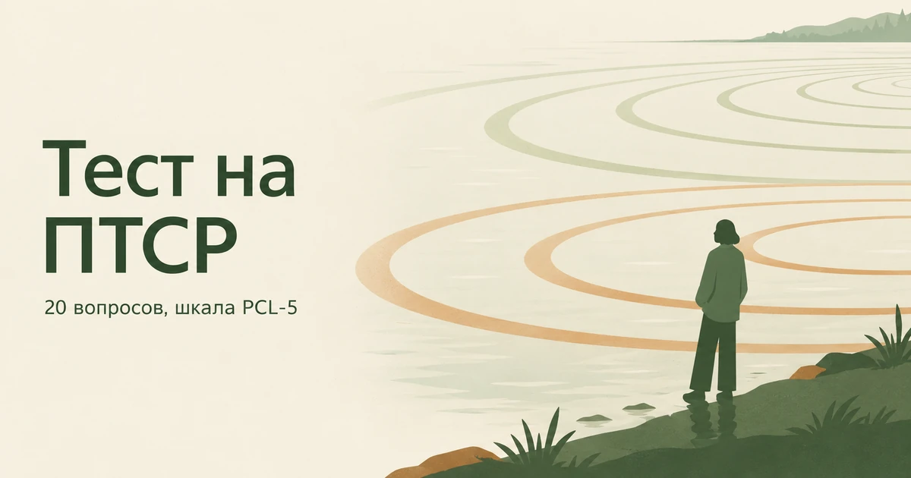

Главная → Тесты → Тест на ПТСР
Тест на ПТСР по шкале PCL-5
Обновлено: 08.09.2026 · 5 минут на прохождение
PCL-5 — шкала из двадцати пунктов, по которой оценивают выраженность посттравматического стрессового расстройства. Её разработал Национальный центр ПТСР Министерства по делам ветеранов США, и она распространяется как общественное достояние. Пункты повторяют диагностические критерии DSM-5: навязчивые воспоминания, избегание, изменения в мыслях и настроении, повышенная возбудимость. Результат — от 0 до 80 баллов, порог скрининга — 31. Бесплатно, без регистрации, ответы остаются в браузере.

Что с этим делать дальше. Балл — не диагноз, а точка отсчёта: смысл он приобретает в динамике, когда видно, растёт он или падает. В приложении AI Therapist есть дневник состояния, упражнения на основе приёмов КПТ и разговор с ИИ-психологом — можно пройти шкалу повторно через пару недель и сравнить.
Что показывает PCL-5
После тяжёлого события отклик есть почти у всех: сон рвётся, случившееся прокручивается в голове, напоминания бьют по нервам. В первые недели это не расстройство, а нормальная работа психики, и у большинства людей проявления постепенно слабеют сами. ПТСР — это то, что остаётся, когда восстановление не идёт: спустя месяц и дольше симптомы не только не уходят, но и продолжают управлять поведением. Подробно о том, как это устроено и что с этим делают, — в отдельном разборе.
PCL-5 измеряет именно это. Двадцать пунктов повторяют диагностические критерии DSM-5 и делятся на четыре группы — по ним видно не только «сколько», но и «что именно» происходит.
| Группа | Вопросы | О чём |
|---|---|---|
| Вторжение | 1–5 | Воспоминания, сны, ощущение, что событие происходит снова, реакция на напоминания |
| Избегание | 6–7 | Попытки не думать о случившемся и не сталкиваться с тем, что о нём напоминает |
| Мысли и настроение | 8–14 | Провалы в памяти о событии, стойкие негативные убеждения, вина, отстранённость, невозможность радоваться |
| Возбудимость | 15–20 | Раздражительность, рискованное поведение, настороженность, вздрагивание, проблемы со сном и вниманием |
Группы важны потому, что ПТСР редко выглядит так, как его представляют. Кино приучило к флешбэкам, а на практике человека чаще приводит к специалисту четвёртая группа: он «стал невыносимым», срывается на близких, не спит и не может сосредоточиться на работе.
Кому этот тест подходит, а кому нет
PCL-5 устроен вокруг конкретного события, и это его главное отличие от других наших шкал. Он спрашивает не «как вам живётся», а «что с вами происходит из-за того самого».
Тест имеет смысл, если в вашей жизни было событие, где вы столкнулись со смертью, угрозой жизни, тяжёлой травмой или насилием — пережили сами, увидели своими глазами или узнали, что это случилось с близким. Сюда же относится работа, где такие вещи приходится видеть постоянно.
Тест не подойдёт, если ничего подобного не было, а тяжело всё равно. Тревога, подавленность и бессонница бывают и без травмы, и мерить их надо другим: для тревоги есть шкала GAD-7, для настроения — PHQ-9, для общего фона — PSS-10.
Отдельно про детский опыт. Если тяжёлое было в детстве и с тех пор прошли годы, PCL-5 всё равно применим — держите в голове это событие. Но чтобы увидеть картину целиком, полезнее пройти опросник ACE: он считает не симптомы, а сами события, и охватывает то, что растянуто на годы, — а таких вещей PCL-5 не видит.
Расшифровка результата
Сумма — от 0 до 80. Ключевая цифра одна: 31 балл. Национальный центр ПТСР указывает, что порог в диапазоне 31–33 баллов говорит о вероятном ПТСР.
| Баллы | Что это значит | Что делать |
|---|---|---|
| 0–13 | Проявлений почти нет | Ничего специально делать не нужно |
| 14–30 | Отклик есть, но ниже порога | Наблюдать; при ухудшении — пройти ещё раз через месяц |
| 31–49 | Выше порога скрининга | Обратиться к специалисту по травме |
| 50–80 | Выраженные проявления | Обратиться, не откладывая |
Есть и второй способ прочитать результат, ближе к тому, как рассуждает врач. Считается не сумма, а набор: пункт засчитывается, если ответ на него «умеренно» или выше, и дальше смотрят, набралось ли хотя бы 1 пункт из вопросов 1–5, 1 из 6–7, 2 из 8–14 и 2 из 15–20. Если да — картина по формальным признакам складывается в ПТСР. Это по-прежнему не диагноз, но объясняет, почему при одинаковой сумме два человека могут получить разные выводы: важно не только сколько, но и в каких группах.
Что делать с результатом
0–13 баллов
Заметного отклика на событие сейчас нет. Если оно было недавно, имеет смысл повторить тест через месяц: ПТСР иногда разворачивается не сразу.
14–30 баллов
Проявления есть, но до порога скрининга не дотягивают. Так чаще всего и выглядит нормальное восстановление, особенно в первые месяцы. Помогает то, что обычно советуют и без всяких тестов и что на этой стадии действительно работает: не оставаться в одиночестве с этим, вернуть режим сна, не глушить состояние алкоголем — он делает хуже именно ночную половину. Настораживать должно не наличие симптомов, а их неподвижность: если за месяц ничего не сдвинулось, это уже повод не ждать дальше.
31–49 баллов
Результат выше порога. Это не диагноз, но повод обратиться к специалисту, работающему с травмой. Важная и не самая очевидная вещь: ПТСР относится к состояниям, которые хорошо лечатся, и методы для него разработаны отдельные. Британское руководство NICE рекомендует взрослым травма-фокусированную когнитивно-поведенческую терапию или EMDR — то есть не «разговоры вообще», а конкретные протоколы с доказанной эффективностью.
Чего делать не стоит — заставлять себя «просто рассказать всё подробно» кому попало. Пересказ травмирующего события вне продуманной работы может ухудшить состояние; в терапии к нему подходят постепенно и не с первой встречи.
50–80 баллов
Проявления выраженные и, скорее всего, уже определяют повседневную жизнь. Обращаться стоит не откладывая. Если нет возможности пойти к частному специалисту — в справочнике бесплатной помощи собраны линии и государственные варианты.
Насколько тесту можно доверять
PCL-5 — один из самых проверенных инструментов в этой области: он опубликован Национальным центром ПТСР, построен прямо на критериях DSM-5 и используется и в исследованиях, и в клинической практике. Как скрининг он работает хорошо.
Ограничения, о которых честно говорят и сами авторы. Это самоотчёт: он показывает, что человек замечает у себя, и не заменяет клиническое интервью. Он привязан к одному событию, а у людей с несколькими тяжёлыми эпизодами картина сложнее. Он охватывает только последний месяц. И он не различает причину: похожую сумму могут дать депрессия, тяжёлое горе или выгорание — поэтому диагноз ставит специалист, а не бланк.
Отдельная оговорка про сроки. Диагноз ПТСР не ставят раньше, чем через месяц после события: до этого похожее состояние называют острой реакцией на стресс, и оно у большинства проходит само. Высокий балл через неделю после случившегося — не то же самое, что высокий балл через полгода.
Когда обращаться независимо от баллов
- появляются мысли о смерти или о том, чтобы навредить себе;
- вы стали пить или принимать что-то, чтобы заглушить состояние;
- вспышки гнева стали опасны для окружающих;
- вы почти не спите несколько недель подряд;
- вы перестали выходить из дома или контактировать с людьми;
- событие произошло больше полугода назад, а легче не становится.
И то, что стоит знать заранее: обратиться за помощью после тяжёлого события — не признак слабости и не означает, что вы «не справились». ПТСР развивается не у тех, кто хуже держится, а по причинам, которые от характера почти не зависят.
Если после тяжёлого события стало трудно и не с кем это обсудить — можно проговорить, что происходит, без осуждения и оценок. Анонимно, без регистрации, круглосуточно.
Частые вопросы
Сколько баллов по тесту PCL-5 говорит о ПТСР?
Порогом считается 31 балл: Национальный центр ПТСР указывает, что результат в диапазоне 31–33 и выше говорит о вероятном посттравматическом стрессовом расстройстве. Это порог скрининга, а не диагноз — он означает, что стоит обратиться к специалисту. Ниже 14 баллов проявления минимальны, от 14 до 30 они есть, но до порога не дотягивают.
Чем ПТСР отличается от обычной реакции на тяжёлое событие?
Временем и тем, управляет ли состояние жизнью. В первые недели после тяжёлого события навязчивые воспоминания, плохой сон и острая реакция на напоминания есть почти у всех — это нормальная работа психики, и у большинства она постепенно слабеет. О ПТСР говорят, когда спустя месяц и дольше симптомы не уходят и продолжают определять поведение: человек избегает мест и разговоров, срывается, не может сосредоточиться.
Может ли ПТСР появиться спустя месяцы или годы после события?
Да, и это известное явление: отсроченное начало, когда проявления разворачиваются через полгода и позже. Иногда их запускает новое событие, похожее на прежнее, или окончание периода, когда человек был вынужден держаться. Поэтому давность случившегося сама по себе не отменяет ни симптомов, ни смысла обратиться за помощью.
Тест на ПТСР ставит диагноз?
Нет. PCL-5 — скрининговая шкала: она показывает выраженность симптомов и вероятность расстройства, но диагноз ставит только специалист по результатам клинической беседы. Похожую сумму баллов могут дать депрессия, тяжёлое горе или выгорание, а высокий результат в первые недели после события — это чаще острая реакция на стресс, а не ПТСР.
Лечится ли ПТСР?
Да, и это одно из состояний с наиболее разработанными методами помощи. Британское руководство NICE рекомендует взрослым травма-фокусированную когнитивно-поведенческую терапию или EMDR — отдельные протоколы, специально созданные для работы с травмой. Медикаменты применяют как дополнение, а не вместо терапии. Чем раньше начата помощь, тем лучше результат.
Тест на ПТСР бесплатный и анонимный?
Да. Регистрация не нужна, тест бесплатный, ответы считаются прямо в браузере и никуда не отправляются — мы их не получаем и не храним. Результат виден только вам и исчезает после закрытия страницы.
Материал подготовлен командой AI Therapist. Мы приводим шкалу PCL-5 в том виде, в каком её публикует Национальный центр ПТСР Министерства по делам ветеранов США, с оригинальным порядком пунктов и системой подсчёта; перевод на русский наш. Шкала распространяется как общественное достояние и не защищена авторским правом. Страница носит просветительский характер, не является диагностическим заключением и не заменяет консультацию специалиста.
Источники: National Center for PTSD — PTSD Checklist for DSM-5 (PCL-5), ВОЗ — Post-traumatic stress disorder, NICE NG116 — Post-traumatic stress disorder, NHS — Post-traumatic stress disorder (PTSD).
Кто отвечает за содержание сайта и по каким правилам мы готовим материалы — на странице о проекте.